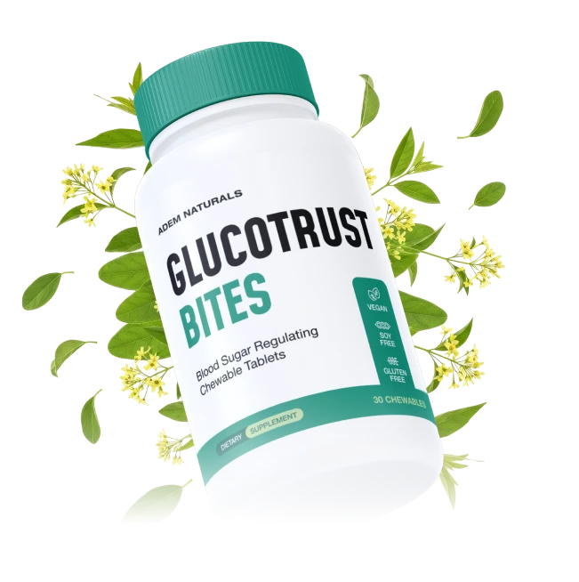
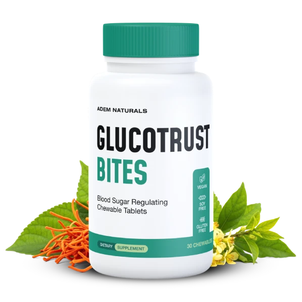
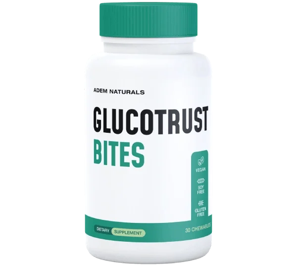
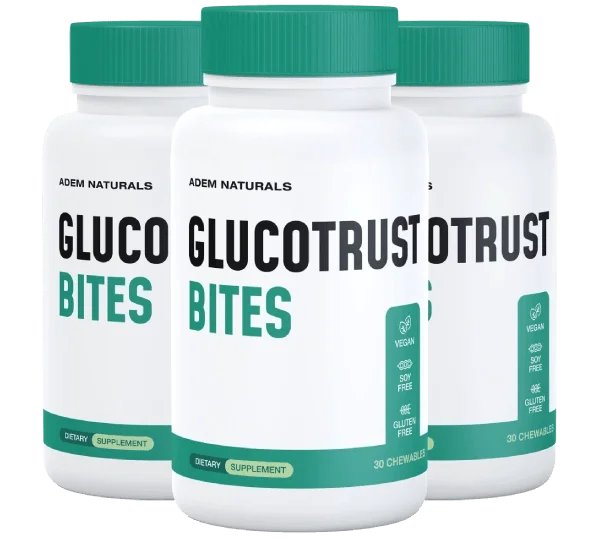
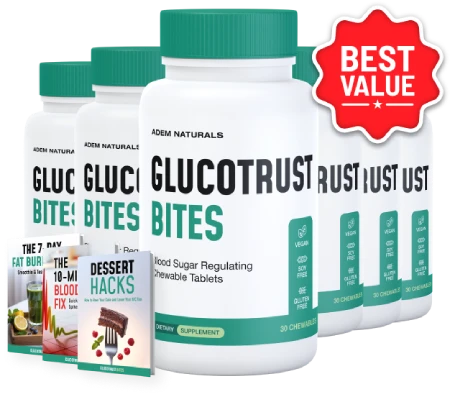

Chewable tablets · Adults 18+ · One a day · No capsules
GlucoTrust Bites: A Daily Chewable That Supports Healthy Blood Sugar Levels Alongside Balanced Habits
GlucoTrust Bites is a once-daily chewable tablet for adults who want a simple morning habit beside balanced meals, short walks and regular check-ups. You chew it, with no capsule to swallow and no powder to mix. The seller presents it as support for healthy blood sugar levels already in a normal range. It does not treat, cure or reverse diabetes, it never replaces prescribed medicine or your own glucose checks, and no result is promised. The seller's page goes further than the evidence on several points, and it lists six ingredients with no amounts, so this site reads the claims plainly, flags who must ask a pharmacist first, shows the one price we can verify and lays out the 60-day refund steps.*
- One chew a day, in the morning
- Six named ingredients, to read one by one
- Free US shipping on 3 and 6 bottles
- A 60-day money-back guarantee
- 1Askyour pharmacist first
- 2Chewone tablet a day
- 3Eatbalanced plates
- 4Walkafter meals
| Take insulin or diabetes medicine? | Ask first |
| On blood thinners or facing surgery? | Read this |
| Shaky, sweaty or confused spells? | Know the signs |
Secured payment • Encrypted checkout • 60-day guarantee
Related: Claims we skip · FAQ · The blog
*These statements have not been evaluated by the Food and Drug Administration. This product is not intended to diagnose, treat, cure or prevent any disease, including diabetes.

An animated teaching sketch, not data. Illustration.
At A Glance
What The GlucoTrust Bites Seller Says About Quality
These are the seller's statements, reported as stated.

Made In The USA
With foreign and domestic ingredients, per the badge.
GMP Practice
Good Manufacturing Practice, per the brand.

Plant-Based Formula
The seller's wording, not a certification.
- FDA registered site
Facility Note
Not an FDA approval of the product.
The seller's page labels one of these "FDA Approved". The FDA does not approve dietary supplements, so no such seal appears here. See the quick answers and the claims we skip.
Read the claims first, then the checkout.
60-day money-back guarantee · Buying checklist · Bundle prices
What Is It
What Is GlucoTrust Bites, As Shown On The Bottle And Page?
GlucoTrust Bites comes in a white bottle with a green band, sold as chewable tablets.*
The seller names six ingredients, cordyceps militaris, banaba leaf, gymnema sylvestre, amla, cinnamon and vanadium, and gives no amounts. It also says "13 natural plant extracts", which does not match the six.
It is a dietary supplement for adults: not a drug, not FDA approved and not a treatment for diabetes or any other condition.
Related: The six ingredients · How to judge claims · Claims we skip
Read The Ingredients
Seller artwork, as supplied.
Pricing
GlucoTrust Bites Prices: The 6 Bottle Bundle Is $49 A Bottle
Three bundles, with free US shipping on the larger two.
Starter

- Price shown at checkout
- 60-day money-back guarantee
Popular

- Free US shipping
- Digital bonus titles offered
- 60-day money-back guarantee
Best Value

- Free US shipping
- Digital bonus titles offered
- 60-day money-back guarantee
The seller also shows "Regular Price $199 per bottle" and "98.7% of customers order 6 bottles", neither of which can be checked, so we leave them out. 1 and 3 bottle prices are shown at checkout. Bundle prices · Buying checklist · Shipping info
Sixty Days
GlucoTrust Bites' 60-Day Money-Back Guarantee
The seller advertises a 60-day money-back guarantee: contact its support by phone or email within 60 days of purchase for a refund, even if the bottles are empty.
Note the purchase date and set a reminder around day 45. See the refund policy and the sixty-day refund steps.
Check A Bundle With A Guarantee The steps in detail →Bonuses
GlucoTrust Bites Bonus Titles: Three Offered, Reviewed
Digital reading with 3 and 6 bottle orders, per the seller.
The other two titles, "The 10-Minute Blood Sugar Fix" and "The 7-Day Fat-Burn Reset", read like condition and fat-burn promises, so no covers are shown. The seller's "$89.99" and "$79.99" values are not repeated. See the bonus titles reviewed and bundle prices.
Related: Shipping info · Refund policy · Pregnancy and kids
How It Works
How GlucoTrust Bites Is Meant To Be Used: One Chew A Day
The seller says most people chew one tablet a day as part of a morning routine. We add: keep your usual checks, and do not use it in place of any medicine.*
- Ask your pharmacist about your medicines first.
- Read your own label, especially the ingredients and serving.
- Chew one tablet in the morning with water.
- Watch for low blood sugar signs if you take diabetes medicine.
- Decide inside the 60-day window.
Related: The daily chew routine · Low blood sugar signs · Habits after meals
One chew inside an ordinary day. Illustration.
The seller's "how it works" story says the chew blocks resistin and improves insulin sensitivity. No trial shows that, so we do not repeat it. Resistin, what we know →
Ingredients
Inside GlucoTrust Bites: Six Named Ingredients, No Amounts
What each is and what to watch for. The list in detail →
The List At A Glance
Six names, no numbers.
| GlucoTrust Bites, as the seller lists it | Detail |
|---|---|
| Form | Chewable tablet, taken one a day, per the seller |
| Cordyceps militaris | Amount not given |
| Banaba leaf extract | Amount not given |
| Gymnema sylvestre | Amount not given |
| Amla fruit extract | Amount not given |
| Cinnamon extract | Amount not given |
| Vanadium | Amount not given |
| Chews per bottle | Not stated on the seller's page |
How to read it: six ingredients are named and none has an amount. The seller also says the formula has "13 natural plant extracts", which does not match the six it names. The Supplement Facts panel on your own bottle, with serving size, amounts and other ingredients, is the final word.
Directions (seller text): most people take one chewable bite daily as part of a morning routine. Consult a professional if you are pregnant, nursing, take medication or manage a health condition.
General research strength. Illustration.
A fair summary: gymnema and cinnamon have small trials, banaba is early, cordyceps and amla are limited, vanadium's early studies used unsafe doses, and no trial of this chew is known.* See the blog on gymnema, cinnamon, banaba and vanadium.
On insulin, diabetes pills or blood thinners? Ask first.
Honest information first · Diabetes medicine first · Blood thinners
Safety
GlucoTrust Bites Safety: Medicines, Low Blood Sugar, Liver And Bleeding
Six reasons to ask first.
Your Medicines Stay
Several ingredients are studied for blood sugar and could add to diabetes medicine, and no amounts are listed. Keep each prescription as your clinician set it. See diabetes medicine first and low blood sugar signs.
Illustration.
Illustration.
A Chew Is Not Diabetes Care
Blood sugar problems need tests and proper treatment. See red flags.
| If you | Then |
|---|---|
| Take insulin or diabetes medicine | Ask first. See diabetes medicine first. |
| Have liver disease or use lots of cinnamon | Ask first. See cinnamon and the liver. |
| Take blood thinners, immune drugs or face surgery | Ask first. See blood thinners and surgery. |
| Are pregnant, nursing, under 18 or have a condition | Do not start without a doctor. See pregnancy, kids, conditions. |
| Feel shaky, sweaty or confused | Act as your clinician taught you. See low blood sugar signs. |
| Have confusion, fainting or chest pain | Seek emergency care at once. |
Call A Clinician For
Readings far from your usual range, heavy thirst, repeated shaky or confused spells, or yellow skin or eyes.
Keep It Away From Children
A chewable tablet can look like candy. Store the bottle cool, dry and out of reach.
Illustration.
Benefits
What GlucoTrust Bites Aims To Support, And Where It Stops
Goals, never promises. The support goals →
A trial window
A 60-day money-back guarantee.
Illustrative emphasis, not measured.
Habits Carry The Weight
Balanced plates, walks, sleep and your regular checks matter far more than a supplement. See blood sugar habits after meals and what GlucoTrust Bites aims to support.
Choose Your Bundle
Comparing GlucoTrust Bites Bundles Honestly
The one price we can state is $49 a bottle on the 6 bottle bundle.
Starter
- Price shown at checkout
- 60-day money-back guarantee
Popular
- Free US shipping
- Digital bonus titles offered
- 60-day money-back guarantee
Best Value
- Free US shipping
- Digital bonus titles offered
- 60-day money-back guarantee
What the price shows. Illustration.
The Sums
Six bottles at $49 each are $294, with free US shipping. The seller does not say how many chews a bottle holds, so a cost per day cannot be worked out. See bundle prices.
Start Small If Unsure
If you are unsure how the ingredients sit with you or your medicines, a smaller bundle is the careful start. See the buying checklist and the refund steps.
Sixty days. Illustration.
Customer Reviews
GlucoTrust Bites Customer Reviews: Questions And Honest Answers
Individual buyers cannot be verified, so no star ratings, counts or named testimonials appear here, and the portraits supplied are illustrative images only. The seller's page prints three five-star stories with names and cities about stable blood sugar and glucose levels, and we do not repeat them. Verified reviews will be added when they can be shown in full, critical ones included.
Illustrative image, not a customer.
Is it safe with diabetes medicine?
Ask first. Several ingredients have been studied for glucose and could add to your medicine, and no amounts are listed. Never stop or change a prescription for a supplement.
Illustrative image, not a customer.
Does it really block resistin?
No such effect is shown. Resistin's role in human blood sugar is still debated, and no trial shows these ingredients lower it.
Illustrative image, not a customer.
Does it lower A1C or treat diabetes?
No. It does not treat, cure or reverse diabetes, and we do not repeat the seller's stories about glucose levels or its A1C bonus subtitle.
Send yours
Used GlucoTrust Bites? Email contact@glucotrustbites.com with your order number and an honest account, kind or critical. Verified reviews can appear here.
Common questions
Medicines, resistin, amounts and refunds. See the quick answers.
Solid facts
The ingredients, the price and the refund steps are spelled out here and in the blog.
Questions
GlucoTrust Bites Questions, Answered Carefully
What is GlucoTrust Bites?
A chewable tablet marketed to support healthy blood sugar levels, with six named ingredients and no listed amounts.
What is inside?
Cordyceps militaris, banaba leaf extract, gymnema sylvestre, amla fruit extract, cinnamon extract and vanadium, per the seller.
Six ingredients or thirteen?
The seller's page says both. We list the six it names.
How do I take it?
Most people chew one a day in the morning, per the seller.
Does it treat diabetes?
No. It does not treat, cure or reverse diabetes or high blood sugar.
Can it cause low blood sugar?
It may, with insulin or diabetes medicine, because several ingredients have been studied for glucose.
Does it block resistin?
No such effect is shown. The role of resistin in people is still debated.
Is it FDA approved?
No. Supplements are not. The seller only says it is made in an FDA-registered facility.
What does it cost?
The 6 bottle bundle is $49 a bottle ($294) with free US shipping. 1 and 3 bottle prices are shown at checkout.
Who should ask a doctor first?
Anyone on diabetes medicine or blood thinners, with liver disease or a weak immune system, pregnant, nursing, or under 18.
What is the guarantee?
A 60-day money-back guarantee by phone or email, and the seller says empty bottles are accepted.
When should I see a doctor?
For shaky, sweaty or confused spells, readings far from your range, blurred vision or fainting.
From The Blog
The GlucoTrust Bites Notebook: Ten Linked Entries
Each ingredient, the resistin claim, absorption claims and meal habits.
Cordyceps Militaris: What Studies Show
Limited evidence.
IngredientsBanaba Leaf And Corosolic Acid
Small trials.
IngredientsGymnema Sylvestre And The Sweet Taste
The best-studied here.
IngredientsAmla Fruit Extract: The Evidence
Antioxidant story.
SafetyCinnamon And Blood Sugar: The Evidence
And the liver.
SafetyVanadium: A Trace Mineral Worth Respecting
A low upper limit.
ClaimsResistin: What We Actually Know
A debated hormone.
ClaimsChewable And Sublingual Claims
Absorption.
HabitsBlood Sugar Habits After Meals
What matters more.
ClaimsHow To Judge Blood Sugar Claims
Four questions.
Ready When You Are
Start With Your Pharmacist, Then Choose GlucoTrust Bites
One chew a day, six named ingredients with no amounts and a 60-day money-back guarantee, from $49 a bottle on the 6 bottle bundle. Order once you have compared the ingredients with your own medicines and health, especially if you take diabetes medicine or blood thinners. See the buying checklist and bundle prices.
- No amounts for any ingredient
- Ask about your medicines first
- Watch for low blood sugar signs
- No promise of results
The Label
The GlucoTrust Bites Details, As The Seller Lists Them
Six ingredients, no amounts. The six ingredients →
| GlucoTrust Bites, as the seller lists it | Detail |
|---|---|
| Form | Chewable tablet, taken one a day, per the seller |
| Cordyceps militaris | Amount not given |
| Banaba leaf extract | Amount not given |
| Gymnema sylvestre | Amount not given |
| Amla fruit extract | Amount not given |
| Cinnamon extract | Amount not given |
| Vanadium | Amount not given |
| Chews per bottle | Not stated on the seller's page |
How to read it: six ingredients are named and none has an amount. The seller also says the formula has "13 natural plant extracts", which does not match the six it names. The Supplement Facts panel on your own bottle, with serving size, amounts and other ingredients, is the final word.
Directions (seller text): most people take one chewable bite daily as part of a morning routine. Consult a professional if you are pregnant, nursing, take medication or manage a health condition.
A dietary supplement cannot be FDA approved. Read the directions and warnings on your own bottle, and see the health disclaimer.
References
Independent Reading For GlucoTrust Bites Shoppers
None of them tested GlucoTrust Bites itself. Our blog digs into each part →
These organizations do not endorse, sponsor or have any affiliation with GlucoTrust Bites or this website. See also the health disclaimer.